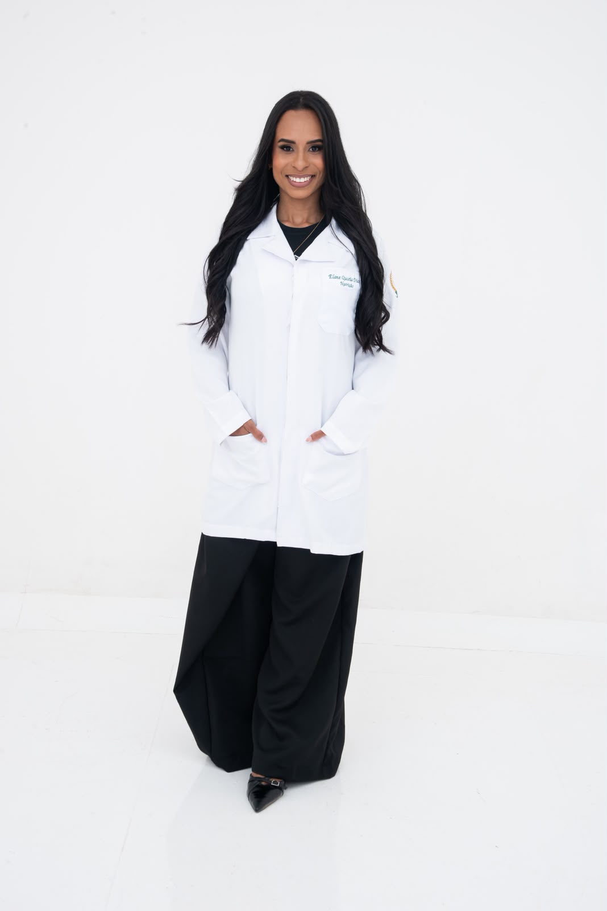
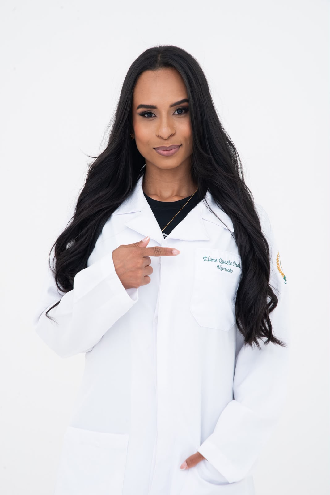
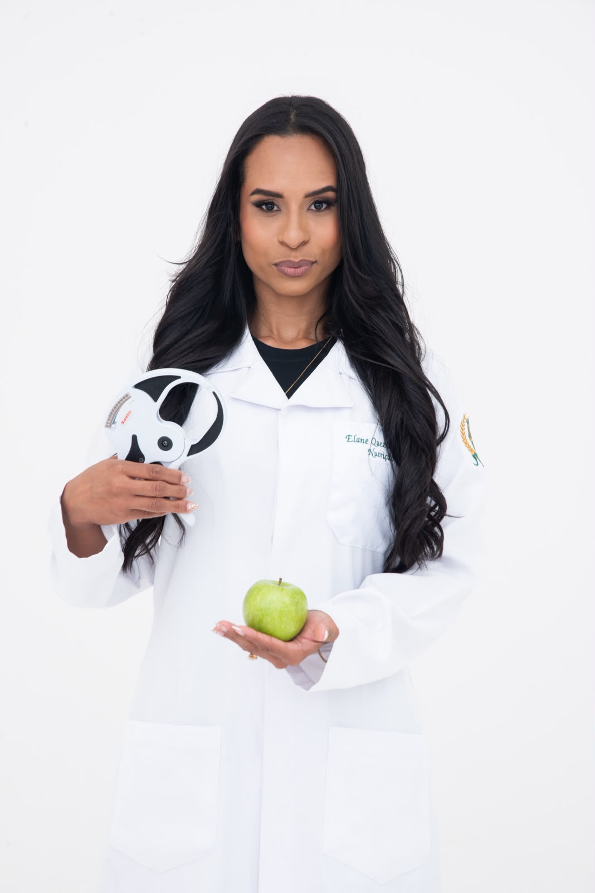

Nutrição · CRN9-38934
Acompanhamento nutricional individualizado, pensado para caber na sua rotina real — não na de um paciente ideal que não existe. Presencial ou online.


Sobre mim
Sou Elane Quezia Dias, nutricionista (CRN9-38934). Minha formação me deu a técnica — mas foi o consultório que me ensinou que nenhum plano alimentar funciona se ele ignora quem a pessoa realmente é: sua rotina, seu paladar, sua história com a comida.
Por isso, meus atendimentos começam sempre pela escuta, não pela restrição. O resultado é um acompanhamento que você consegue manter — sem listas de alimentos proibidos, sem culpa e sem promessas que não se sustentam.
Como posso te ajudar
Construção de hábitos alimentares duradouros, no seu ritmo — sem dietas restritivas que só funcionam enquanto duram.
Perda de peso conduzida com acompanhamento próximo, ajustes reais e nenhum atalho que comprometa sua saúde a longo prazo.
Planos alimentares que dialogam com condições de saúde específicas, sempre em conjunto com o restante da sua equipe médica.
Ajustes na alimentação para mais energia, melhor digestão e disposição no dia a dia — sem virar sua rotina de cabeça para baixo.
Como funciona a consulta
Nada de plano genérico entregue e esquecido. O acompanhamento continua depois da primeira consulta.

Uma conversa real sobre sua rotina, seu histórico de saúde e sua relação com a comida — a base de tudo que vem depois.
Construído para caber no seu estilo de vida — seus horários, suas preferências, o que está ao seu alcance no dia a dia.
Retornos para ajustar o plano conforme sua evolução, com suporte entre as consultas quando surgirem dúvidas.
Transformações
Pela primeira vez não senti que estava fazendo dieta. Só mudei a forma de comer.
Paciente em acompanhamento · 8 meses
A escuta no início fez toda a diferença. O plano parecia feito sob medida, porque era.
Paciente em acompanhamento · 1 ano
Os retornos me mantiveram no caminho nos meses difíceis. Nunca me senti sozinha no processo.
Paciente em acompanhamento · 5 meses
Dúvidas frequentes
O atendimento é particular. Após a consulta, entrego um recibo que pode ser usado para reembolso, caso seu plano de saúde ofereça essa opção.
Sim. A anamnese, o plano alimentar e os retornos seguem a mesma estrutura — só muda o formato da conversa, por videochamada.
A frequência é combinada de acordo com o seu objetivo, geralmente a cada 3 ou 4 semanas, para ajustar o plano conforme sua evolução.
Se você já tiver exames recentes, é útil trazê-los. Caso não tenha, não é um impedimento — podemos seguir com a avaliação inicial normalmente.